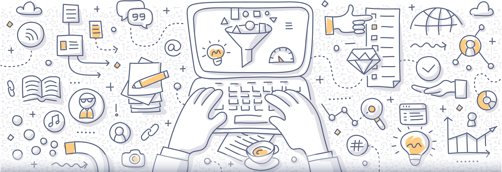
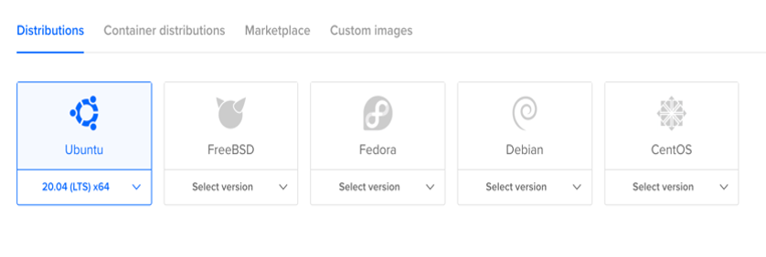
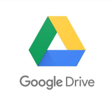
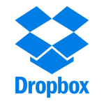
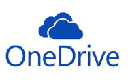
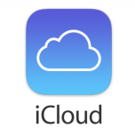

1. Curaduría de contenidos digitales
1.1 ¿A qué hace referencia la curación de un contenido?
Quién no se ha sentido alguna vez sobrecogido o agobiado ante la avalancha de información que nos llega a diario a través de los múltiples canales de comunicación como páginas web, blogs, redes sociales, televisión, prensa escrita y hablada, etc. La tasa de producción de contenidos que se genera cada minuto en internet supera con creces la capacidad de cualquier ser humano para gestionarla adecuadamente. Todos sucumbimos ante esta infoxicación (Cornella, 2002) y los instructores no somos la excepción.

Si bien, antes hemos mencionado la curación de contenidos como una herramienta, esta puede enfocarse como estrategia, por la profundidad en el uso que le demos; en este caso, nos estaríamos refiriendo al proceso que consiste en buscar, recopilar, filtrar y seleccionar la información, mediación, herramienta web, aplicación, entre otros, más pertinente para nuestros recursos educativos de todo lo que encontramos en internet.
En otras palabras, el proceso para seleccionar aquellos contenidos o recursos que aportan valor para nuestra actividad educativa de aula se puede denominar curación de contenidos.
1.2 La curación de contenidos en la era digital
Las prácticas más comunes ahora de compartir información han multiplicado el número de publicaciones en la red, a pesar de ello las personas evitan tener que leer montañas de información irrelevantes; es por esto, que la curación de contenidos cobra vital importancia en la era digital. Veamos algunas ventajas:
Ventajas de la curación de contenidos
Como técnica resulta muy eficiente a la hora encontrar ideas para creación de contenidos.
Ayuda a mejorar la calidad de los contenidos que desarrollamos.
Permite aumentar el número de estudiantes que encuentran coincidencia con lo que enseñamos.
Disminuye la infoxicación.
Mejora la imagen y reputación online del instructor.
Para poder hacer una curación de contenidos de manera apropiada, se sugieren los siguientes pasos:
Recopilar: una vez identificada la necesidad de formación de nuestros aprendices, determinamos cuáles serían los contenidos o mediaciones de utilidad, “cuando sabemos lo que queremos encontrar, es más fácil identificar esa información” (Claudio, 2020); para ello, podemos utilizar los buscadores, redes sociales, páginas web o agregadores de contenido. Esta información seleccionada la agrupamos en un repositorio que la contendrá y desde el cual continuaremos la curación.
Filtrar: después de seleccionar los contenidos es necesario leer muy bien lo que nos dicen o las características que tienen, esto permitirá quedarnos con aquellos que nos interesan y que serán de utilidad para nuestra labor.
Organizar: filtrados los contenidos, es necesario categorizarlos, identificarlos, organizarlos y guardarlos con sus fuentes en un sistema de repositorio propio.
Contextualizar: contextualizar o reinventar los contenidos, es uno de los pasos más importantes, ya que con lo seleccionado podemos crear contenidos novedosos y con un toque particular; por ejemplo, se puede pensar en títulos nuevos, nuevas opciones de uso de herramientas, una estructura diferente, etc.
Almacenar: las herramientas de almacenamiento como repositorios u otros que cumplen la misma función como redes sociales, web blog, páginas web, agregadores de noticias, etc., son las que permiten contener de manera organizada la nueva información, recursos o proyectos que se han construido con los pasos anteriormente descritos; de igual manera, podemos compartirlos a través de estos.
Compartir: ahora que tenemos el contenido deseado, podemos utilizarlo en la creación de los recursos educativos, si lo que tenemos son las herramientas web deseadas, podemos integrarlas a los recursos educativos o proyectos que desarrollemos.
Retroalimentar: una vez publicados nuestros nuevos recursos o contenidos en la plataforma de curación o en los repositorios elegidos, se hace necesario poder recopilar sugerencias y observaciones sobre estos, ya que esta información dará la posibilidad de actualizar, mejorar o fortalecer lo construido.
1.3 Herramientas para la curación de contenidos
El escenario educativo está siendo completamente transformado por las actividades de curación de contenidos y, a la vez, estas actividades por las herramientas web que están surgiendo, hoy docentes, padres y aprendices deben saber encontrar, probar y evaluar nuevas herramientas y recursos de manera pública, colaborativa y distribuida (EdShelf. 2016).
Selección:
Organización y selección:
Creación:
Distribución del contenido:
2. Organización y almacenamiento de la información
Los dispositivos de almacenamiento de información, como lo indica su nombre, son componentes capaces de grabar datos en su memoria, facilitando así el transporte de información y su distribución a distintos equipos. Además de eso, los dispositivos de almacenamiento de información auxilian como herramientas de almacenamiento seguro de datos, también conocidos como backup (Marcas, 2019).
Aparece como una necesidad a partir del surgimiento y desarrollo de las Tecnologías de la Información y la Comunicación. Entre los que encontramos marcadores sociales, lectores RSS y servicios de alojamiento en línea, se caracterizan por mejorar los recursos tecnológicos, reducir costos, permitir el acceso a los documentos casi a tiempo real sin necesidad de cargas de alta duración, compartir recursos con independencia del dispositivo y la ubicación, optimizar su uso de manera automática y la seguridad es igual o mejor que otros sistemas convencionales (Contributors, 2020).
En el ámbito educativo, llegan a ser de gran importancia los marcadores sociales puesto que hacen parte de la cotidianidad, siendo un medio que permite almacenar, etiquetar, organizar y compartir, de una manera eficiente los sitios más relevantes o de interés del usuario, de esta manera se establecen como favoritos y quedan al alcance casi que inmediato, en este caso de los docentes (Cobo. R, y Pardo. H, 2007).
En esta misma línea, el almacenamiento en la nube, puede ser considerado como un aliado para el docente, siendo programas o servicios que no están en el ordenador y se encuentran ubicados en Internet, por eso se dice que están en la Nube (Contributors, 2020). Es así, como esta herramienta, aporta un servicio de apoyo, en el momento que le permite guardar o almacenar grandes cantidades de información, como archivos, documentos, medios digitales audio, video, entre otros, que están siempre a la mano, pues se puede acceder desde cualquier dispositivo que cuente con conectividad.
Es así, como en el siguiente apartado se amplía la información en cuanto al acercamiento conceptual y las diversas posibilidades que estos brindan al usuario.
2.1 Marcadores sociales
Los marcadores sociales son herramientas para almacenar, clasificar y compartir enlaces en Internet o en Intranet. También permiten establecer relaciones entre conceptos y clasificar con una finalidad, así como construir redes de trabajo. Este tipo de herramientas brinda la oportunidad de expresar puntos de vista propios sobre recursos de información a través de estructuras informales (Carlo s.f.)
Los marcadores sociales sirven para organizar archivos en línea y páginas favoritas (puedes organizar todos los enlaces, clasificando las etiquetas y carpetas), compartir con amigos (por correo y por redes sociales) y encontrar artículos interesantes.
Además, dentro de sus ventajas se encuentran las siguientes:
Acceder de forma rápida desde cualquier ordenador y lugar a los almacenes donde se guardan los sitios seleccionados.
Clasificación mediante etiquetas "tags" que permite llevar un seguimiento de los enlaces de forma más sencilla respecto a otros métodos tradicionales.
Gestión de una empresa de forma eficiente, no perdiendo enlaces en cualquier ordenador de algún trabajador.
Al compartir la información, las etiquetas pueden usarse de forma colectiva convirtiéndose en una fuente útil de información.
Pero, así mismo, se presentan algunas desventajas:
No hay un sistema preestablecido de palabras clave o categorías.
No existe una estructura predefinida para las etiquetas, lo cual puede llevar a errores a la hora de deletrear.
Los tags pueden tener más de un significado y ofrecer resultados inexactos debido a confusiones entre sinónimos.
Los usuarios pueden crear tags demasiado personalizados con poco significado para otros.
No existe una forma para estructurar los tags de forma jerárquica.
Dentro de los marcadores más conocidos se encuentran:
- Del.icio.us: es uno de los marcadores sociales más conocidos y utilizados. Permite compartir noticias, clasificarlas por tags, ver las personas que comparten esa misma noticia o enlace.
- StumbleUpon: marcador social de páginas en inglés, con clasificación temática y formato de vídeo, imágenes y noticias.
- IndianPad: uno de los marcadores más populares de la India. Las categorías más populares son la tecnología y las noticias. Los resultados se pueden votar, comentar y enviar por correo electrónico.
En educación, los profesores cuentan con la ayuda de los marcadores para su localización y clasificación a modo de biblioteca profesional, con el añadido del carácter social de la herramienta, que permite conocer qué otros recursos han escogido nuestros colegas de otras comunidades o países.
Además, los marcadores sociales pueden llevar a nuestros alumnos selecciones específicas de recursos, o pueden ser una herramienta de investigación y puesta en común de lo hallado. Las herramientas de marcación social están cada vez más integradas con otros servicios de la web 2.0 como redes sociales o lectores de flujos de RSS (Unknown, 2016).
Lectores RSS
Los RSS (Really Simple Syndication, por sus siglas en inglés) comprenden servicios de notificación y lectura sobre sitios Web que son del agrado del usuario y que han sido actualizados, los cuales evitan tener que cubrir una ruta extensa para llegar al contenido. Así, un RSS es una forma estandarizada de distribución de información que se gestiona y almacena desde un solo lugar. Un servicio RSS puede darse de alta directamente desde el equipo de cómputo, desde un navegador Web o un programa de correo electrónico, o en línea (Carlo, s.f.).
Es un formato de datos que sirve para el envío de contenidos a quienes están registrados en un determinado sitio de internet. Esta estructura permite que la distribución del contenido se realice sin que sea necesario valerse de un navegador, ya que la acción se lleva a cabo a través de un software creado especialmente para leer esta clase de datos que se conoce como agregador.
De todas formas, las versiones más recientes de los principales navegadores contemplan la necesidad de leer los contenidos de RSS sin necesidad de acudir a un software adicional.
El RSS está contemplado en el conjunto de formatos XML y ha sido ideado para aquellos espacios web que se actualizan de forma periódica y que permiten compartir datos y aprovecharlos en otros programas o páginas web. El formato RSS se ha masificado con el auge de los weblogs o blogs, donde suele compartirse información de diversas fuentes de modo integrado (Unknown, 2016).
Tiene como ventajas:
Actualización instantánea y permanente.
Acceso a las noticias o información de una determinada web sin tener que ir hacia ella desde el navegador.
Seguimiento de aquellos sitios que visitamos asiduamente.
El RSS está libre de SPAM, porque no hay que dar la dirección de correo electrónico.
Recibir las fuentes o canales RSS de tus páginas web favoritas es totalmente gratuito. Tanto los contenidos como la mayoría de los programas (lectores RSS) que permiten leer las noticias RSS son gratuitos.
Cabe resaltar, que gracias a los agregadores y los lectores de feeds, un usuario puede recibir en el escritorio de su sistema operativo en su programa de correo electrónico o mediante otras aplicaciones web, resúmenes de todos los sitios que él ha seleccionado por considerarlos interesantes. De esta manera, no es necesario que recorra decenas de sitios para enterarse de las novedades (Menéndez, 2018).
Dentro de los tipos de lectores RSS se encuentra:
Lectores RSS que se instalan directamente en el ordenador: son programas que se instalan en cada ordenador. Cuando se tiene abierto el programa, este accede cada cierto tiempo a las páginas web suscritas para traer las actualizaciones directamente al ordenador de uno. Algunos de los programas más populares son: Feedreader, Newsmonster y RSS Reader.
Lectores RSS online: los lectores RSS en línea cumplen la misma función que los programas que se instalan en el ordenador, aunque en este se hace todo a través de una página web. Para ello, es necesario darse de alta en la página web que ofrece ese servicio y dar de alta un perfil. A partir de ese momento, se puede acceder al lector web introduciendo el nombre de usuario y contraseña. Algunos de los programas en línea más populares y conocidos son: Netvibes o Google Reader.
Lectores RSS en tu navegador web o programa de correo electrónico: también se pueden recibir las actualizaciones de las páginas web a través del navegador o del programa de correo electrónico. Algunos de los navegadores y clientes de correo más conocidos que permiten hacer esto son: Internet Explorer, Mozilla Firefox, Outlook Express o Mozilla Thunderbird (35Webs, 2011).
2.2 Servicios de alojamiento en línea
El hosting (hospedaje) es un servicio cuya función se encarga de proporcionar un espacio dentro de internet para alojar un sitio web y mantenerlo en línea. Es un espacio virtual dentro de uno o varios servidores que están instalados en un espacio físico muy especial, al que se le conoce como Data Center (centro de datos). Estos centros de datos están ubicados por todo el mundo, ya que mientras más cerca esté el data center al usuario final, más rápido será el internet.
La elección del hosting debe estar sujeto a las necesidades del proyecto web, para lo cual es importante tener en cuenta:
Sistema operativo
Se debe tener en cuenta que sistema operativo usará el servidor del hosting antes de contratar un servicio de alojamiento web. Los sistemas operativos dominantes en servidores web son: Linux y Windows. Ambos sistemas son robustos y cuentan con una gran comunidad de usuarios.
- Linux, es un sistema operativo libre y con código fuente abierto, a ello se debe su gran popularidad cuando hablamos de servidores o entornos de programación. Cuando se desea contratar un servicio de alojamiento con este sistema operativo, realmente lo que vamos a encontrar para seleccionar es una distribución de linux, dentro de las más conocidas están:
- Debian
- Ubuntu
- Fedora
- CentOS

Pantalla de selección de sistema operativo en el servicio de hosting de DigitalOcean - Windows, este sistema operativo fue desarrollado por la empresa Microsoft Corporation. La versión más reciente de Windows es Windows 10 para equipos de escritorio, Windows Server 2019 para servidores y Windows 10 Mobile para dispositivos móviles. En este caso para el uso de servidores web hablamos del paquete Windows Server. Un hosting con sistema operativo Windows Server está diseñado especialmente para proyectos que utilicen tecnología de Microsoft (ASP, ASP.NET, entre otros) o para proyectos que ameriten el uso de base de datos de Microsoft SQL Server o Access.
Uso que se le da al hosting:
Se utiliza para distintos proyectos web como son:
- Hosting para página web
- Hosting para correos corporativos
- Hosting streaming
- Hosting WordPress
- Hosting para proyectos web con el CMS Joomla
- Hosting para formación en línea con el uso de plataformas LMS como Moodle
- Hosting para juegos
Además, se debe tener en cuenta el tipo que se amolda a la necesidad, ya que cada uno cuenta con características específicas:
Hosting compartido: es un tipo de hosting que hospeda a varias páginas web en un solo servidor. Es ideal para proyectos que están iniciando ya que suelen ser más económicos que el resto de los servicios de alojamiento.
Cloud hosting: se considera una tecnología muy novedosa, por ser un hosting cuyo almacenaje es mediante la nube brindado la posibilidad de acceder a recursos ilimitados que son facilitados virtualmente por varias máquinas (nodos o servidores) ubicadas en diferentes partes de nuestro planeta.
VPS: el hosting VPS es la elección preferida de los emprendedores cuyos proyectos web están teniendo éxito y necesitan más recursos. Un servidor web se divide en varios servidores separados uno de del otro mediante software (virtual). De manera que cada hosting VPS tiene RAM, núcleos de CPU y disco duro separados virtualmente de los otros servidores web, brindando mayor estabilidad a páginas web o aplicaciones que tienen muchas visitas al día.
Hosting dedicado: el hosting dedicado es ideal para sitios web o aplicaciones muy grandes usados a menudo por grandes compañías o corporaciones que tienen sistemas de administración ERP, CRM o carritos de compra con muchos productos. La diferencia entre el hosting dedicado y el VPS es que el dedicado cuenta con mayor acceso al sistema operativo del servidor (Moreno, 2018).
Además, se encuentra el almacenamiento en la nube que es un servicio que permite almacenar datos transfiriendose a través de Internet o de otra red a un sistema de almacenamiento externo que mantiene un tercero. Hay cientos de sistemas de almacenamiento en la nube diferentes que abarcan desde almacenamiento personal, que guarda o mantiene copias de seguridad de correo electrónico, fotos, vídeos y otros archivos personales de un usuario, hasta almacenamiento empresarial, que permite a las empresas utilizar almacenamiento en la nube como solución comercial de copia de seguridad remota donde la compañía puede transferir y almacenar de forma segura archivos de datos o compartirlos entre ubicaciones (Azure, s.f.).
Dentro de las plataformas usadas se encuentra:

Google Drive: es la herramienta que anteriormente se conocía como Google Docs. Tiene como novedad el servicio de almacenamiento de archivos en la nube y sincronización con otros dispositivos donde se tenga instalada la herramienta Google Drive, es decir, los recursos están disponibles no solo en el computador donde fueron creados o guardados, sino también en la web. Esta herramienta puede instalarse en un computador, en un dispositivo móvil o utilizarse desde un navegador. Algunas características son: proteger la información, acceder desde cualquier dispositivo, compartir archivos o carpetas, visualizar todo tipo de formatos, buscar rápidamente (Drive (s.f)

Dropbox: es una herramienta que permite sincronizar archivos a través de un directorio virtual o disco duro virtual en la red. Esto nos permite disponer de un disco duro o carpeta virtual de forma remota y accesible desde cualquier ordenador en el mundo. Es lo mismo que tener una memoria stick o Pen drive USB, pero alojada en internet de tal forma que nos permite tener toda la información que deseemos en la red y con ello siempre disponible desde cualquier PC en cualquier parte del mundo (Gil, 2011).

OneDrive: es un servicio de almacenamiento en la nube, mediante el cual podrás almacenar todo tipo de archivos. Pero la gran diferencia que tiene éste en comparación con otros servicios similares es su relación con Microsoft Office 365. Gracias a ello, junto a Onedrive se puede crear un documento y editarlo sin necesidad de guardarlo en una USB o enviarlo a una dirección de correo electrónico para su edición. Los programas que puedes utilizar para ello son los que contienen el paquete de Microsoft Office (Nube, s.f.)
Box: es una las herramientas virtuales que promueven y desarrollan el almacenamiento de información en la nube y han creado discos duros virtuales que pueden tener las mismas ventajas de uno real, pero en la web, entre ella la reproducción, vista, creación de archivos en la nube sin la necesidad de complementos o agentes externos (Salazar, 2013).

iCloud: presta servicio de almacenamiento en la nube con la Marca Apple, tuvo sus inicios en 2011; dentro sus principales características, permite guardar fotos, videos, documentos, música y datos de aplicaciones en el mismo lugar; esta herramienta de almacenamiento permite acceder a todos los archivos y datos desde dispositivo iOS y Mac, como también PC con Windows desde la aplicación en línea, y mantener esos archivos y carpetas actualizados cualquiera de los dispositivos en los que se tenga acceso. (Tillman, 2020).
Mega: es una de las alternativas más conocidas y que cuenta con más almacenamiento disponible de forma totalmente gratuita. Permite alojar hasta 50 GB sin tener que pagar nada. Ofrece además descargas múltiples y una gestión del contenido bastante completa. Esta es una de las opciones más utilizadas por los usuarios. Sin duda es muy interesante para alojar copias de seguridad pesadas y tener todos los archivos siempre disponibles desde cualquier lugar (Zone, s.f).
Estimado aprendiz, para ampliar la información de este tema puede acceder a los siguientes enlaces:
Google DRIVE: https://www.google.com/intl/es_ALL/drive/
Dropbox: https://www.dropbox.com/es/features/cloud-storage
OneDrive: https://www.microsoft.com/es-co/microsoft-365/onedrive/online-cloud-storage
Box: https://www.apple.com/co/icloud/
Mega: https://mega.nz/
Glosario
Almacenamiento: atiende a la acción de almacenar o guardar en diversos dispositivos, en este caso hace referencia a algún tipo de información, de este modo el almacenamiento, se asimila como a realizar el depósito de ciertos elementos en un determinado espacio.
Feed: el término Feed hace referencia al suministro y actualización de datos electrónicos, es empleado para referirse a lo que anteriormente se conocía como documentos de formato RSS, que permiten agrupar información actualizada de las páginas Web y contenido en internet, el cual puede exportarse a otros sitios como Google Reader, Twitter o Facebook, para que el usuario pueda hacer lectura cuando lo desee.
Hackers: el término puede ser abordado desde dos instancias, en primer lugar el que hace referencia al experto en informática, realiza procesos para proteger y mejorar la seguridad informática; por otro lado, también conocidos como “Piratas informáticos”, siendo quienes acceden de manera ilegal a un sistema con el propósito de robar datos privados, de personas o empresas.
Hosting: comprende el servicio de almacenamiento de diversa información en la nube o alojamiento Web; su principal función es publicar un sitio o aplicación web en Internet , desde un servidor.
Lectores RSS: son aquellos que permiten marcar a los usuarios sus páginas web o blogs de interés como favoritos, de esta manera, permite recibir notificaciones de actualización de la información, como artículos, contenidos que son de su importancia. También se hace referencia al lector RSS, como el que permite organizar y reunir la información en un solo lugar, garantizando el acceso rápido para el usuario, permite su organización por carpetas o categorías.
Marcadores Sociales: los marcadores sociales atienden a un medio social, que tienen como función almacenar, organizar, compartir y clasificar diversos enlaces en Internet; existen marcadores de enlaces generales, en el que se prestan servicios especializados en diferentes áreas como música, moda, libros, compras, mapas,entre otros.
Spam: hace referencia a la información y en especial a mensajes no deseados, no solicitados o de remitentes desconocidos, por lo general es información que no es relevante para el usuario; así mismo, el término atiende a diversos escenarios correos electrónicos, foros, redes sociales, chat, entre otros.
Referencias bibliográficas
35Webs. (2011). RSS Explicada. Obtenido de RSS Explicada: https://www.rss.nom.es
Azure, M. (s.f.). ¿Qué es el almacenamiento en la nube? Obtenido de ¿Qué es el almacenamiento en la nube?: https://azure.microsoft.com/es-es/overview/what-is-cloud-storage/
Carlo , J. (s.f.). Ranking de herramientas en línea. Obtenido de Ranking de herramientas en línea: http://www.razonypalabra.org.mx/Comun_Javier%20Carlo/2010/comun_oct2.html
Caudio, I. (2020). Qué es la Curación de Contenidos y las 25 mejores herramientas: https://aulacm.com/curacion-de-contenidos-herramientas/
Cobo, R. Cristobal, P. Kuklinski, H. (2007). Planeta Web 2.0. Inteligencia colectiva o medios fast food. Grup de Recerca d’Interaccions Digitals, Universitat de Vic. Flacso México. Barcelona / México DF.https://universoabierto.org/2016/07/20/planeta-web-2-0-inteligencia-colectiva-o-medios-fast-food/
Contributors, E. (22 de Julio de 2020). Almacenamiento de información digital . Obtenido de Almacenamiento de información digital : https://www.ecured.cu/index.php?title=Almacenamiento_de_informaci%C3%B3n_digital&oldid=3417772
Drive, G. (s.f.). Explora las funciones de almacenamiento de Drive. Obtenido de Explora las funciones de almacenamiento de Drive: https://www.google.com/intl/es-419_ALL/drive/using-drive/
Gil , J. L. (22 de Febrero de 2011). Qué es Dropbox y cómo funciona. Obtenido de Qué es Dropbox y cómo funciona: https://www.synergyweb.es/blog/que-es-dropbox-y-como-funciona/
Gutierrez Zuñiga, C. (29 de Julio de 2020). La Netiqueta y sus 10 Reglas Básicas. Obtenido de La Netiqueta y sus 10 Reglas Básicas: https://blog.continental.edu.pe/uc-virtual/la-netiqueta-y-sus-10-reglas-basicas/
Marcas, V. (09 de Julio de 2019). Dispositivos de almacenamiento de información. https://marcass.com.mx/dispositivos-de-almacenamiento-de-informacion/
Menéndez , R. (02 de Octubre de 2018). Prácticas: lectores RSS, Feedly. Obtenido de Prácticas: lectores RSS, Feedly: https://www.um.es/docencia/barzana/PRACTICAS/RSS-Google-Reader.html
Moreno , C. (07 de Agosto de 2018). ¿Qué es hosting? Obtenido de ¿Qué es hosting?: https://www.solucionesmedia.com/que-es-hosting/
Muñoz Carril, P. C., & Muñoz Carril , M. (2008). IMPLEMENTACIÓN DEL FORMATO RSS (RICH SITE SUMMARY). Revista de Medios y Educación, 5-18. Obtenido de IMPLEMENTACIÓN DEL FORMATO RSS (RICH SITE SUMMARY).Norte, F. U. (2016). Normas APA. Obtenido de Normas APA: https://www.ucn.edu.co/gestion-servicio/Documents/Recursos/Normas%20APA%20-.pdf
Nube, H. e. (s.f.). ¿Qué es Onedrive? Ventajas y desventajas de esta herramienta en la nube. Obtenido de ¿Qué es Onedrive? Ventajas y desventajas de esta herramienta en la nube: https://herramientasenlanube.com/que-es-onedrive/
Olivier Peralta , E. (s.f.). Marcadores Sociales: Qué son y para Qué Sirven. https://www.genwords.com/blog/marcadores-sociales
Salazar Alvarez , L. M. (2013). Informática y TICs. https://sites.google.com/site/zaalma07/pagina-principal/la-nube/box
Tillman, M. (24 de Marzo de 2020). ¿Qué es Apple iCloud Drive y cómo funciona? https://www.pocket-lint.com/es-es/aplicaciones/noticias/apple/131058-que-es-apple-icloud-drive-y-como-funciona
Universia, O. (01 de Noviembre de 2019). ¿Qué son las normas APA y cómo usarlas en tu tesis? https://orientacion.universia.edu.pe/infodetail/orientacion/consejos/que-son-las-normas-apa-y-como-usarlas-en-tu-tesis-4246.html
Unknown. (08 de Marzo de 2016). Comunicación en las redes sociales . http://blancam252.blogspot.com/2016/03/siglas-rss-y-marcadores-sociales-mas.htm
Vicente, V. (24 de Mayo de 2012). Las RSS. Obtenido de Las RSS: http://recursostic.educacion.es/observatorio/web/gl/internet/aplicaciones-web/1048-las-rss
Zone, R. (s.f.). Mejores servicios de almacenamiento en la nube. https://www.redeszone.net/reportajes/listas/mejores-servicios-almacenamiento-nube/
Fotografías y vectores tomados de https://www.shutterstock.com/ y https://www.freepik.es/
Licencia Creative Commons
CC BY-NC-SA
Ver licencia.